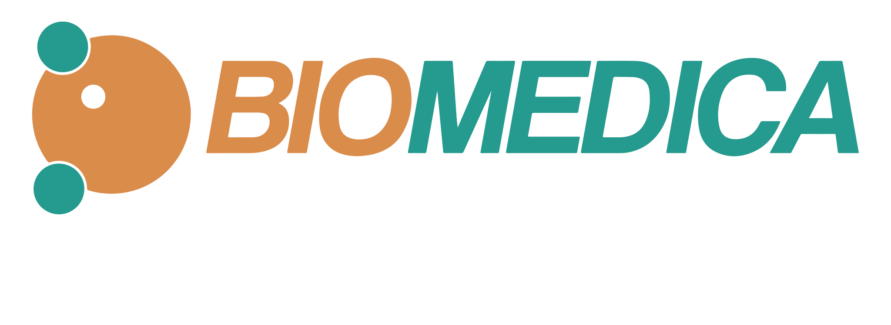

Convenios:



Convenios:

Análisis completo de sangre, coagulación, hemogramas y estudios de células sanguíneas con tecnología automatizada.
Análisis químicos de fluidos corporales para evaluar función orgánica, metabólica y estado nutricional.
Identificación de microorganismos patógenos y pruebas de sensibilidad a antimicrobianos.
Estudios del sistema inmunológico, alergias, enfermedades autoinmunes y serologías.
Muestras procesadas de forma confidencial y segura
Toma de muestras indolora en la comodidad de tu hogar
Resultados válidos para trámites legales
Recíbelo en 24-48 horas
Proceso indoloro con hisopo bucal
Usa el sobre prepago incluido
En 3-5 días hábiles